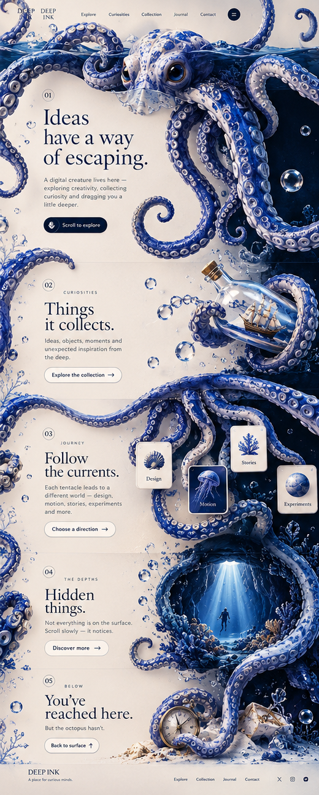

Two original, approved porcelain-blue octopus compositions. An illustration-led experiment in rhythm, sea life, and scrolling art.

Approved video media is archived separately while upload is completed.